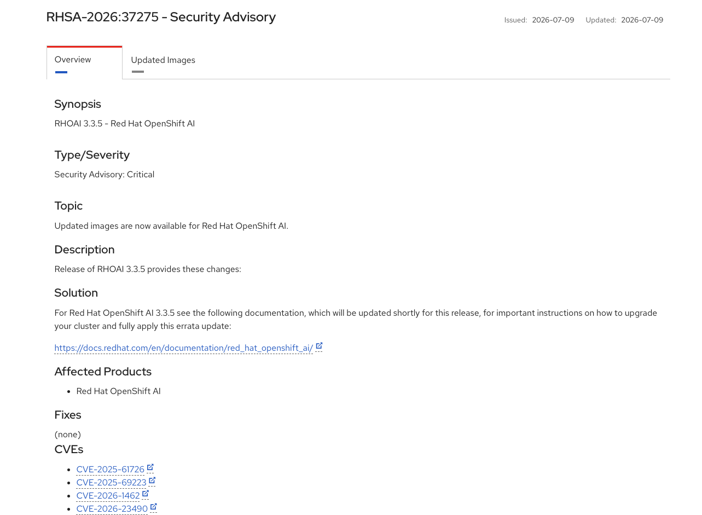
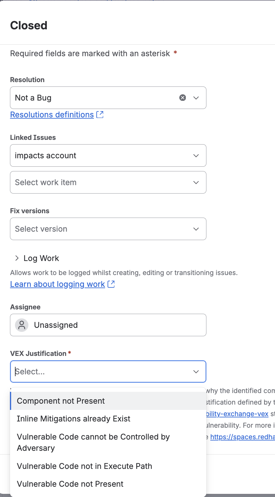

CVE (Common Vulnerabilities and Exposures) is an industry-wide reference code for specific known cybersecuirity issues.
You can find more information about specific CVEs e.g. on:
RH uses this Tekton pipeline to create a release wth an advisory to inform users about the present CVEs

CVE trackers produced by the ProdSec will look like this:
CVE-2026-59885 rhoai/odh-trustyai-nemo-guardrails-server-rhel9: pyasn1: Denial of Service via crafted ASN.1 OBJECT IDENTIFIER [rhoai-3.3]
If you are an involved user, you should be cc’d on the ticket and you will get an email notifcation when the ticket is created
CVE-2026-59885 rhoai/odh-trustyai-nemo-guardrails-server-rhel9: pyasn1: Denial of Service via crafted ASN.1 OBJECT IDENTIFIER [rhoai-3.3]
CVE-2026-59885: the CVE identifier
rhoai/odh-trustyai-nemo-guardrails-server-rhel9: the potentially affected downstream component
pyasn1: the vulnerable dependency
Denial of Service via crafted ASN.1 OBJECT IDENTIFIER: the vulnerability description
[rhoai-3.3]: the affected product + version (stream)
You can also get signal about the CVEs on our upstream repositories, usually via Trivy GH action workflow.
Report Summary
┌─────────────────────────────────────────────────────────────────────────┬────────┬─────────────────┬─────────┐
│ Target │ Type │ Vulnerabilities │ Secrets │
├─────────────────────────────────────────────────────────────────────────┼────────┼─────────────────┼─────────┤
│ nemoguardrails/library/jailbreak_detection/requirements.txt │ pip │ 0 │ - │
├─────────────────────────────────────────────────────────────────────────┼────────┼─────────────────┼─────────┤
│ package-lock.json │ npm │ 0 │ - │
├─────────────────────────────────────────────────────────────────────────┼────────┼─────────────────┼─────────┤
│ poetry.lock │ poetry │ 29 │ - │
├─────────────────────────────────────────────────────────────────────────┼────────┼─────────────────┼─────────┤
│ requirements.txt │ pip │ 25 │ - │
├─────────────────────────────────────────────────────────────────────────┼────────┼─────────────────┼─────────┤
│ .venv/lib/python3.12/site-packages/chainlit/data/storage_clients/gcs.py │ text │ - │ 1 │
└─────────────────────────────────────────────────────────────────────────┴────────┴─────────────────┴─────────┘
Legend:
- '-': Not scanned
- '0': Clean (no security findings detected)
poetry.lock (poetry)
====================
Total: 29 (HIGH: 29, CRITICAL: 0)
┌──────────────────┬─────────────────────┬──────────┬──────────┬───────────────────┬───────────────┬──────────────────────────────────────────────────────────────┐
│ Library │ Vulnerability │ Severity │ Status │ Installed Version │ Fixed Version │ Title │
├──────────────────┼─────────────────────┼──────────┼──────────┼───────────────────┼───────────────┼──────────────────────────────────────────────────────────────┤
│ cryptography │ GHSA-537c-gmf6-5ccf │ HIGH │ fixed │ 46.0.5 │ 48.0.1 │ Vulnerable OpenSSL included in cryptography wheels │
│ │ │ │ │ │ │ https://github.com/advisories/GHSA-537c-gmf6-5ccf │
├──────────────────┼─────────────────────┤ │ ├───────────────────┼───────────────┼──────────────────────────────────────────────────────────────┤
│ gitpython │ CVE-2026-42215 │ │ │ 3.1.46 │ 3.1.47 │ GitPython is a python library used to interact with Git │
│ │ │ │ │ │ │ repositories. ... │
│ │ │ │ │ │ │ https://avd.aquasec.com/nvd/cve-2026-42215 │
│ ├─────────────────────┤ │ │ │ ├──────────────────────────────────────────────────────────────┤
│ │ CVE-2026-42284 │ │ │ │ │ GitPython is a python library used to interact with Git │
│ │ │ │ │ │ │ repositories. ... │
│ │ │ │ │ │ │ https://avd.aquasec.com/nvd/cve-2026-42284 │
│ ├─────────────────────┤ │ │ ├───────────────┼──────────────────────────────────────────────────────────────┤
│ │ CVE-2026-44243 │ │ │ │ 3.1.48 │ GitPython: GitPython: Arbitrary file write via crafted │
│ │ │ │ │ │ │ reference paths │
│ │ │ │ │ │ │ https://avd.aquasec.com/nvd/cve-2026-44243 │
│ ├─────────────────────┤ │ │ ├───────────────┼──────────────────────────────────────────────────────────────┤
│ │ CVE-2026-44244 │ │ │ │ 3.1.49 │ GitPython is a python library used to interact with Git │
│ │ │ │ │ │ │ repositories. ... │
│ │ │ │ │ │ │ https://avd.aquasec.com/nvd/cve-2026-44244 │
│ ├─────────────────────┤ │ │ ├───────────────┼──────────────────────────────────────────────────────────────┤
│ │ GHSA-mv93-w799-cj2w │ │ │ │ 3.1.50 │ GitPython: Newline injection in config_writer() section │
│ │ │ │ │ │ │ parameter bypasses CVE-2026-42215 patch, enabling RCE... │
│ │ │ │ │ │ │ https://github.com/advisories/GHSA-mv93-w799-cj2w │
├──────────────────┼─────────────────────┤ │ ├───────────────────┼───────────────┼──────────────────────────────────────────────────────────────┤
│ langchain-core │ CVE-2026-34070 │ │ │ 1.2.17 │ 1.2.22 │ langchain: path traversal in legacy load_prompt functions in │
│ │ │ │ │ │ │ langchain-core │
│ │ │ │ │ │ │ https://avd.aquasec.com/nvd/cve-2026-34070 │
│ ├─────────────────────┤ │ │ ├───────────────┼──────────────────────────────────────────────────────────────┤
│ │ CVE-2026-44843 │ │ │ │ 1.3.3, 0.3.85 │ LangChain vulnerable to unsafe deserialization of │
│ │ │ │ │ │ │ attacker-controlled objects through overly broad `load()`... │
│ │ │ │ │ │ │ https://avd.aquasec.com/nvd/cve-2026-44843 Within Field Tab of the CVE tracker, you should check the Severity
Within Details section of the CVE tracker, you should check the following fields:
True, then this is likely a critical CVE that is not yet public, and you should treat it with cautionOnce assigned to a CVE tracker, you should assess if you are truly vulnerable by answwering the following questions:
If the answer to these questions is no, you can potentially close the CVE tracker via VEX
You can close the CVE tracker via Not a bug resolution as follows:

Won't Do resolution, this is not permittedIf you are truly vulnerable and VEXing is not an option, you should either:
First, establish if the CVE comes from:
pyproject.toml file)lock files but not in toml)The following workflow might be useful for upgrading a vulnerable Python dependency:
1️⃣ upgrade the direct dependency inside pyproject.toml file
2️⃣ if the direct dependency can’t be upgraded but the transitive package version is flexible, use centralized CVE Constraints (dependencies/cve-constraints.txt) and regenerate the lock file e.g.
For the components that use AIPCC based indexes (aka most of our Python-based images from rhoai-3.5 onwards), you need to:
1️⃣ check if the version if on the AIPCC index
2️⃣ if the version is not on the AIPCC index, you might need to initiate a new onboarding request
When I review a CVE fix PR, I now only approve PRs iff:
1️⃣ the Konflux CI pipeline is green for all four architectures (x86_64, aarch64, ppc64le, s390x)
2️⃣ there are no regressions on ODH tests
it might be prudent to attach this evidence to the CVE tracker and PR, so that the reviewer can access it easily